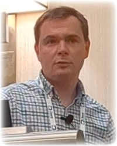

Static keys for BPF
The kernel has a lot of code paths that are normally disabled: debugging print statements, tracepoints, etc. To support these efficiently, there is a common mechanism called static keys that provides a way to enable or disable a code path at run time, with effectively no overhead for disabled branches. BPF programs have not been able to take advantage of static keys so far, because they aren't compiled into the kernel. Now, it looks like BPF may be getting support for a similar mechanism — and the design could also provide one of the components needed to support jump tables, another missing feature. Anton Protopopov presented his plans to add static keys to BPF at the 2024 Linux Storage, Filesystem, Memory Management, and BPF Summit.

Static keys in normal kernel code work by using self-modifying code. An static_branch_unlikely() directive in the source is compiled to no-op instructions of the appropriate size to hold a jump instruction instead (five bytes on x86_64). At run time, when the kernel wants to enable the branch, it overwrites the no-op instruction with a jump instruction to the code for the branch. The same technique doesn't work for BPF for several reasons. For one, the existing static-key support is, as the name would suggest, static. It is configured at build time, which won't work for BPF programs, since they aren't linked into the kernel. For another, there are security concerns with allowing self-modifying code, meaning that the modification should not be implemented in BPF itself.
Protopopov's proposal sidesteps both of those issues. He would like to add two new BPF instructions: goto_or_nop and nop_or_goto, depending on whether the chosen branch is enabled or disabled by default. New instructions are needed because the verifier will need to be taught to still consider both branches, even though the instructions themselves choose one branch or the other unconditionally. Then, the places where the new instructions occur will be associated with some static key. Since BPF represents many things with maps, Protopopov suggested using a new map type. When a map of that type is updated, the relevant instructions will be patched to the other variant.
There are a few complications with this approach; one is the fact that the just-in-time (JIT) compiler doesn't know in advance how long the code it generates will be, so the offset that needs to be patched can't be calculated ahead of time. Protopopov described his plans for how this would be reflected in the new map type. Before the program is loaded, the map would hold BPF instruction offsets. On load, the map becomes read-only to user space, and the locations in the map are updated as relocations and JIT compilation are performed. The verifier will need some way to access the map as well, to check that the modifiable locations only point to the new instructions.
Protopopov finished by describing how user space could make a bpf() syscall to update the state of a static key. David Vernet remarked that the mechanism sounded like it would be useful for sched_ext, especially if the ability to update a static key were made available as a kfunc, noting that other schedulers use static keys a lot. Protopopov replied that the patching code has to take a mutex, so not all code could necessarily use it. Alexei Starovoitov asked about how user space would indicate which static key it was interested in. Protopopov indicated that the instruction map could hold multiple separate keys, so user space would just indicate which one it wanted to update.
Joe Stringer asked whether, if a BPF program were running while the static key was being updated, the code could see it as being in an inconsistent state. Protopopov said that could happen, but that this didn't present too much of a problem for use cases like debugging. For other uses, the programmer will have to be careful not to rely on the value of a switch remaining the same for an entire BPF function.
The discussion then turned to how to make the map available to the verifier. The verifier already receives several file descriptors with information it needs, so it would seem simple to add another. Unfortunately, the data passed to it is a bit messy and makes this more complicated than it perhaps should be, Protopopov explained.
A member of the audience questioned whether the proposal really needed new instructions, noting that the instruction encoding is getting crowded and that the verifier could tell which instructions were special by reading the map. Protopopov pointed out that this would make disassembly pretty confusing, since in that case any goto or nop instruction could potentially be a hidden branch. Starovoitov said that two more instructions would not be a problem for the moment. Another member of the audience asked why two new instructions were necessary; Protopopov said that they were for code that was patched in or patched out by default, respectively.
A security-minded participant said that they worked on a hypervisor that tests static-key updates in the kernel, to check that the values being written make sense. As part of that process, it hooks into the existing kernel mechanism, suggesting that there is already plenty of information available. They asked why BPF needs a separate mechanism to store locations to be patched. Protopopov replied that the existing kernel support was "too static", since it only applies to code that is actually linked into the kernel.
Jump tables
Sometimes, one part of a program can transfer control flow to many other parts. Switch statements are possibly the most common example. Small switch statements are usually compiled to normal conditional branches, but larger switch statements are sometimes compiled to a table of code pointers. The code uses the value being switched on as an index into the table, and then jumps to the resulting location. This technique — called a jump table — can be much faster and more compact, although it is also harder on the branch predictor. BPF doesn't support jump tables, however, because it lacks generalized indirect branches.
Since Protopopov's proposal would add a new type of map with all of the infrastructure for tracking where BPF instructions end up in memory, it could provide a necessary stepping stone toward supporting jump tables in BPF. One possible design would be to add a "goto register" instruction, where the verifier ensures that the register value is loaded from a map of the right type.
Currently, BPF programs that need to have something like a dispatch table need to emulate it with a long chain of if statements. This is inefficient, since many conditions need to be tested to find the right alternative. It also presents a problem for the verifier, which restricts the number of branches that it is willing to consider in order to avoid spending an excessive amount of time on verification. Jump tables would make that limit much less restrictive, because an indirect jump through a table would count as only a single branch.
Jump tables are frequently used to implement switch statements, especially in bytecode interpreters, Protopopov said. Although he has a plan for the BPF side, he's not sure how complicated implementing support for this style of jump table in GCC or LLVM will be. Starovoitov said that he doesn't expect the change to be difficult, since LLVM already represents switch statements in pretty much this way. All that will be needed is having LLVM create a map for all the known targets of a switch statement. Protopopov asked whether adding BTF debugging information to it would be difficult; Starovoitov didn't think that sounded difficult either.
Support for jump tables was one of the features Starovoitov had called out in his earlier session as necessary to the continued growth of BPF. While there were some questions about the design of Protopopov's proposal, it seems likely that something like this will be implemented for BPF.
| Index entries for this article | |
|---|---|
| Kernel | BPF |
| Conference | Storage, Filesystem, Memory-Management and BPF Summit/2024 |